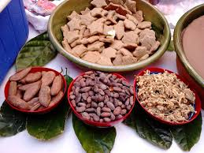
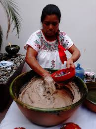
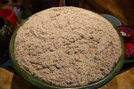
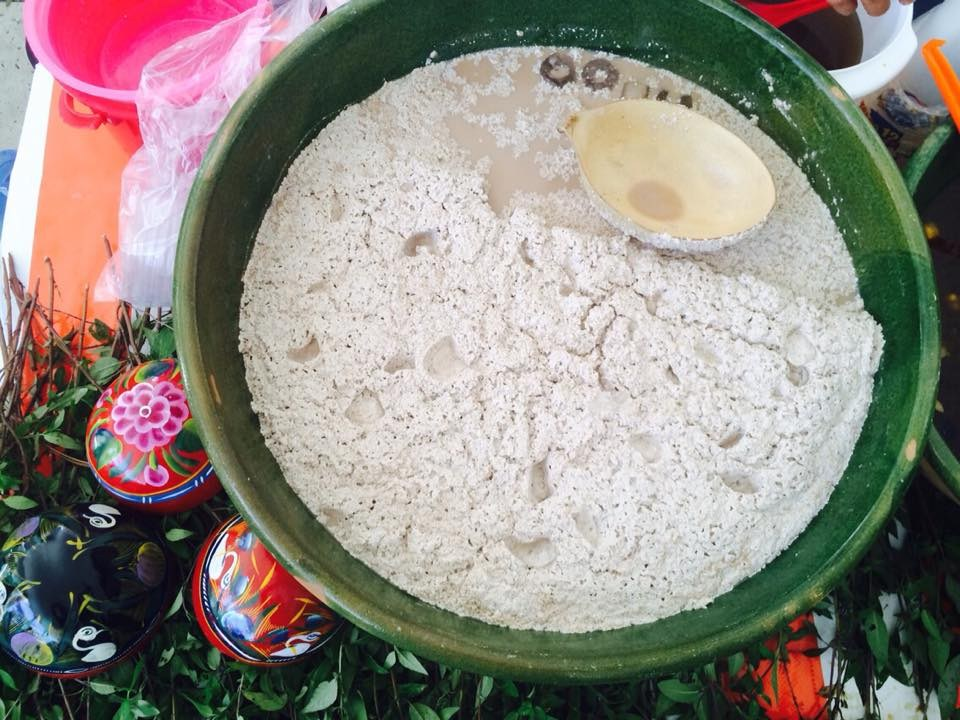
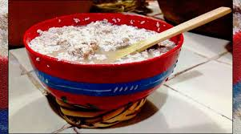

TEJATE
Ingredientes
- ½ kilo de maíz
- 50 gramos de cacao huesos de mamey
- 50 gramos de flor de cacao
- Azúcar al gusto
- Hielo
Preparación
- Cocer el maíz, una vez listo limpiar toda la cáscara y lavar hasta quedar completamente blanco.
- Moler.
- Tostar los huesos de mamey, el cacao y las flores, moler todo junto.
- Incorporar esta mezcla al maíz y batir en agua helada con azúcar.
- Sirve con hielo en jícaras rojas.





Sirve y disfruta…
COCINA DOÑA MARI
MOLE
DULCE
TAMALES
TEJATE